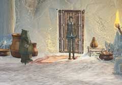
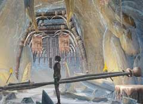
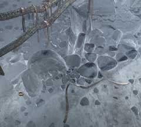

|
目覚めてから
地面が割れ、あなたは深い穴に落ちた。そして、気が付くとあなたはベッドの上にいた。服を着て、外に出たらまずは情報を集めなければならない。あなたが、やらねばならないことは、以下のとおりである。 ・ハンスの居場所を調べる ・祈祷師のいる部屋へ通じる太鼓を止める まずは、これだけである。

・ハンスはどこにいるだろうか? ・ユコール族の言葉は分からない。英語が使える人を捜さねばならない。 ・また、祈祷師がどこにいるかも調べる必要がある。

・この先に祈祷師がいる。 ・この太鼓を止めるには、あるアイテムが必要となる。 ・そのアイテムはどのように使うかが問題である。

・太鼓を止めるのに必要なアイテムの一つは、この「革ひも」である。 ・これは、どこにあるのだろうか? ・もう一つのアイテム「トナカイの角」は、どこにあるか? ・この2つを組み合わせてできた”もの”を”どこ”で使うのだろうか?
| 次へ >> |
|